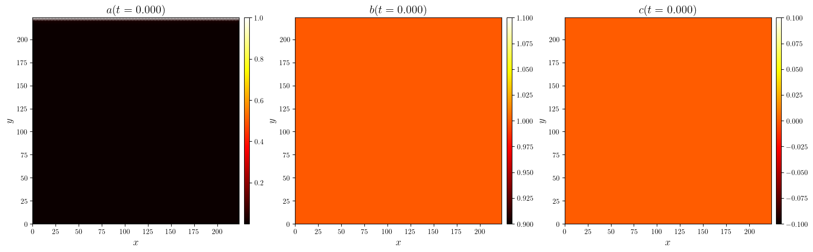
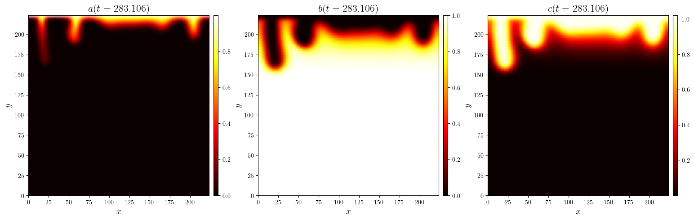
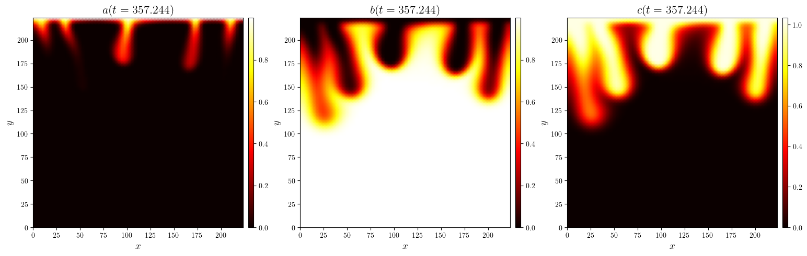
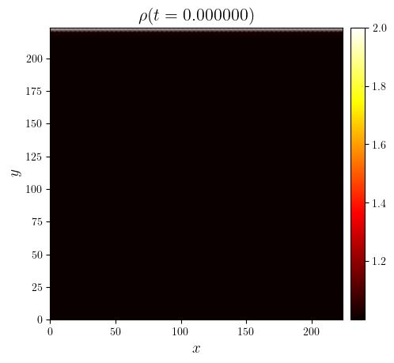
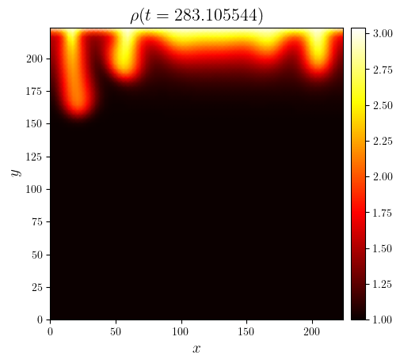
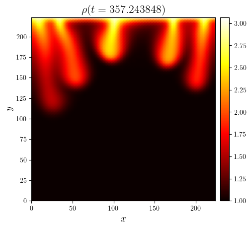

ABC convection of a Darcy fluid in a porous rectangle#
\[\begin{split}
\mathbb{S}_{a,b,c,\psi}
\begin{cases}
\Omega = [0, \mathcal{A}X] \times [0, X] & \text{aspect ratio } \mathcal{A}=\mathcal{O}(1) \\
a_0(x,y)=\lim_{\epsilon\to0}\left(1+\text{erf}\left(\frac{y-X}{\epsilon X}\right)\right)+\mathcal{N}(x,y) & \text{perturbed initial concentration} \\
w_0\geq 0\quad\forall w\in\{b,c\} & \text{constant initial concentrations} \\
a_{\text{D}}(x,y=X)=1 & \text{heavy upper boundary} \\
a_{\text{N}}(x,y=0) & \text{no-$a$-flux on lower boundary} \\
a_{\text{N}}(x=0,y) & \text{no-$a$-flux on left boundary} \\
a_{\text{N}}(x=\mathcal{A}X,y) & \text{no-$a$-flux on right boundary} \\
w_{\text{N}}\vert_{\partial\Omega}=0\quad\forall w\in\{b,c\} & \text{no-$b$-flux and no-$c$-flux on entire boundary} \\
\psi_{\text{D}}\vert_{\partial\Omega}=0 & \text{no-penetration on entire boundary} \\
\phi=1 & \text{constant porosity} \\
\mathsf{D}_w = \mathsf{I}\quad\forall w\in\{a,b,c\} & \text{constant isotropic dispersions}\\
\mathsf{K} = \mathsf{I} & \text{constant isotropic permeability} \\
\mu = 1 & \text{constant viscosity} \\
\rho(a,b,c) = \beta_a a + \beta_b b + \beta_c c & \text{$\beta_c>\beta_b$ for destabilization}\\
\Sigma(a,b) = ab & \text{bilinear reaction} \\
\textbf{e}_g=-\textbf{e}_y & \text{vertically downward gravity} \\
\end{cases}
\end{split}\]
from lucifex.fdm import AB1, CN
from lucifex.sim import run
from lucifex.plt import (
plot_colormap, plot_colormap_multifigure,
create_animation, save_figure, display_animation,
)
from py.A20_darcy_abc_convection import darcy_abc_convection_rectangle
b0 = 1.0
c0 = 0.0
beta_a = 1.0
beta_b = 1.0
beta_c = 2.0
simulation = darcy_abc_convection_rectangle(
aspect=1.0,
Nx=64,
Ny=64,
cell='quadrilateral',
scaling='reactive',
Ra=500.0,
Da=100.0,
beta_a=beta_a,
beta_b=beta_b,
beta_c=beta_c,
b0=b0,
c0=c0,
D_adv=AB1 @ CN,
D_diff=CN,
D_src_a=AB1,
D_src_b=AB1,
D_src_c=AB1,
courant_adv=0.1,
courant_diff=1.0,
courant_reac=0.1,
a_limits=(0, 1),
b_limits=(0, b0),
c_limits=(0, None),
)
n_stop = 600
dt_init = 1e-6
n_init = 10
run(simulation, n_stop=n_stop, dt_init=dt_init, n_init=n_init)
a, b, c, rho = simulation['a', 'b', 'c', 'rho']
time_indices = (0, int(0.5 * n_stop), -1)
for i in time_indices:
cmaps = [w.series[i] for w in (a, b, c)]
titles = [f'${w.name}(t={w.time_series[i]:.3f})$' for w in (a, b, c, c)]
mfig, *_ = plot_colormap_multifigure(n_cols=3, cbars=True)(
cmaps,
title=titles,
)
save_figure(f'abc(x,y,t={c.time_series[i]:.3f})', thumbnail=(i == time_indices[-1]))(mfig)



time_indices = (0, int(0.5 * n_stop), -1)
for i in time_indices:
ti = rho.time_series[i]
fig, ax = plot_colormap(rho.series[i], title=f'$\\rho(t={ti:.6f})$')
save_figure(f'rho(x,y,t={ti:.3f})')(fig)


